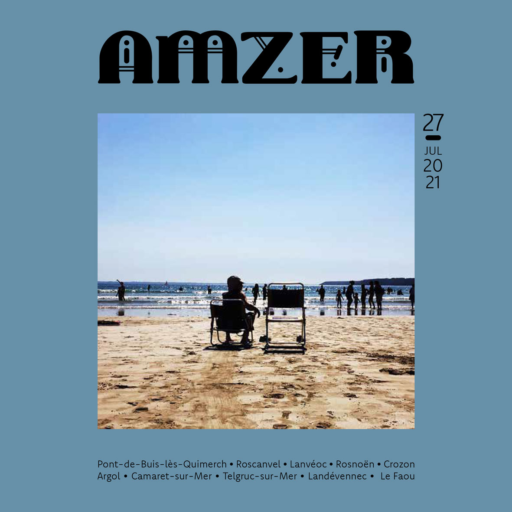

Ce site est en cours de construction. En attendant...
Découvrez Amzer n°27 - Juillet 2021

Pour lire la version numérique, c'est par
là
Édito - Awen
Il y a des coins du monde que l’on n’oublie jamais, qui laissent dans le cœur une trace indélébile ; qui inspirent les
artistes, suscitent mille rêveries, contes et histoires fabuleuses.
Des endroits où la mer et le ciel peuvent parfois se confondre, passant du bleu azur au profond gris ardoise en l’espace
d’une seconde. Où le soleil s’amuse à cache-cache avec les nuages,
dispersant ses rayons avec parcimonie, faisant danser les ombres dans une folle ronde ; intensifiant les verts, les
bruns et les jaunes ; jonglant, décomplexé, avec la météo.
Des terres où les yeux sans arrêt s’écarquillent,
quel que soit l’horizon, quelle que soit la saison.
Des lieux un peu magiques qu’on ne veut plus quitter et nous avons la chance de vivre dans l’un d’eux !